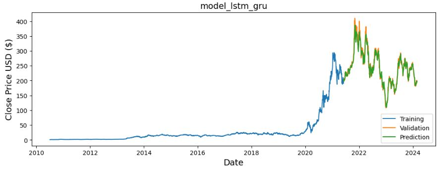

Collection of Deep Learning, Computer Vision, Time Series & NLP projects
Segregated Object Counting Pipeline
(Object Detection + Tracking + Counting)
► Developed flexible multi-object/region tracking and counting solution with YOLO integration. (OOP)
► Comprehensive class structure facilitates straightforward customization of tracking parameters and UI elements.
► Seamless integration of YOLO-based object detection models.
► Reusable across different projects and applications.
Outfit Scoring Application
(Instance Segmentation + Clothing Annotation)
► Created an application that identifies an individual's outfit, evaluates it based on the garments worn, and provides recommendations to enhance its rating.
► Real time pixel segmentation and position tracking of garments worn with scoring and recommendation system.
► Labeled and utilized segmentations of a custom dataset comprising images of various clothings for model training.
► Custom trained model has 32.7% higher mask precision than base model.
Pneumonia X-Ray Classifier
(Image Classification + Web Deployment)
► Created a custom CNN image classification model to detect signs of pneumonia from chest X-ray images.
► Leveraged transfer learning on InceptionResNetV2 model to achieve 93.9% accuracy on detection with 99% recall on pneumonia predictions.
► Utilized Streamlit to deploy the smaller custom model online.
Tesla Stock Prediction Study
(RNN Time Series + LSTM + GRU)

► Study on feasibility of stock prediction using RNN.
► Stock prices are mostly affected by unpredictable external events where the model is not aware of.
► Model cannot predict an accurate price as stock prices can't be predicted based on its own values.
Insurance Charges Prediction
(Tensorflow Regression)
► Continuation of a past project which can be found HERE.
► Utilized neural network to improve model prediction performance.
Unified Vehicle Counting System
(YOLOv8 + OpenCV)
► Created a vehicle counting system which aggregates counting of all types of vehicles in designated lanes.
► The model disregards detection on insignificant vehicles.


{kind=link}
{kind=link}
{kind=link}
{kind=link}